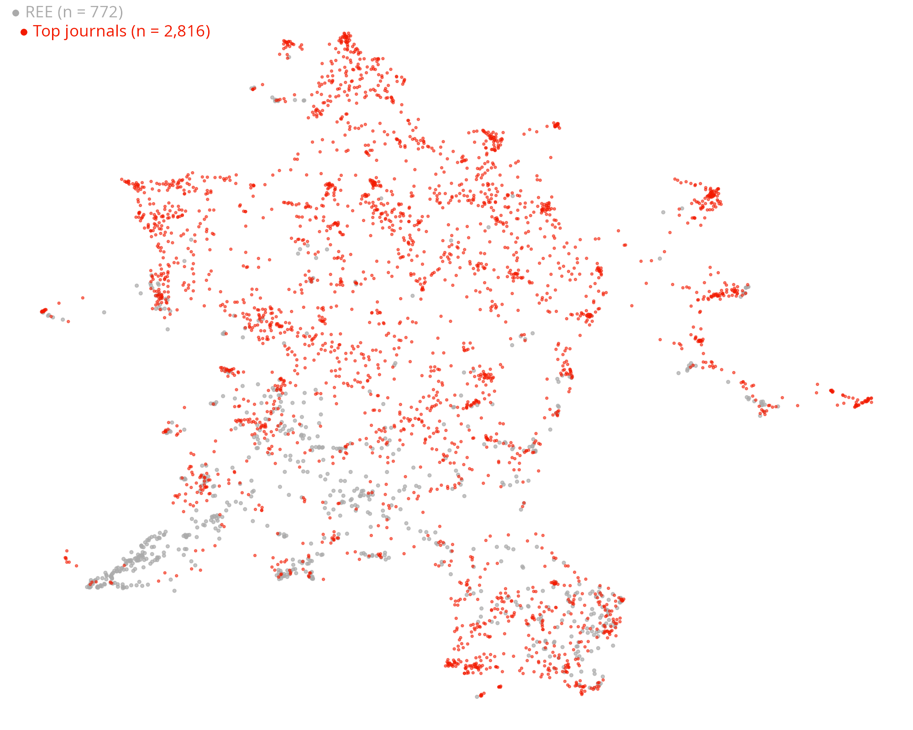
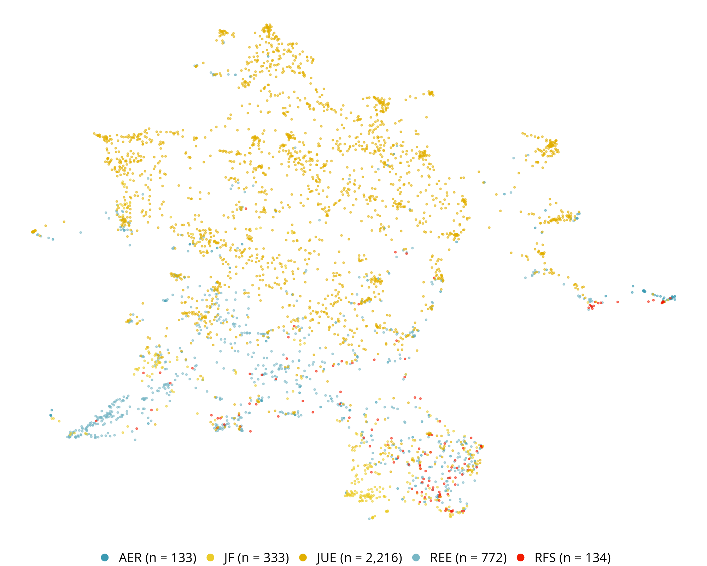
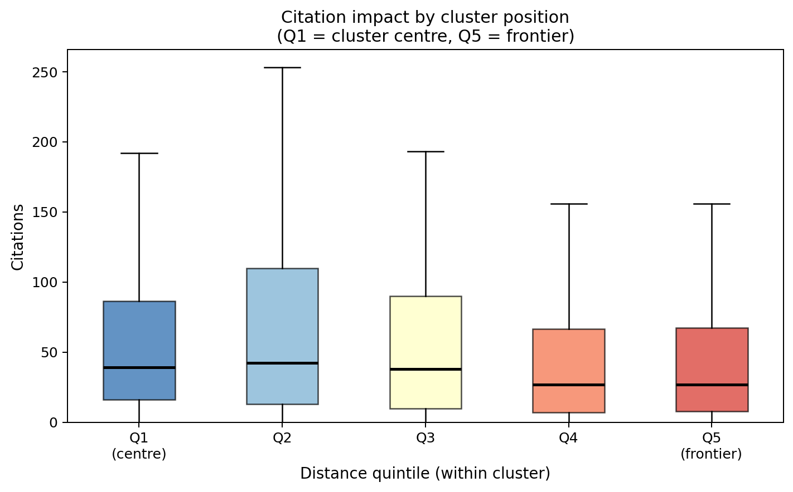
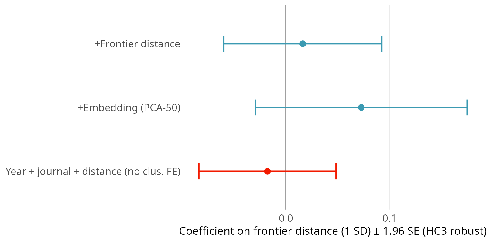
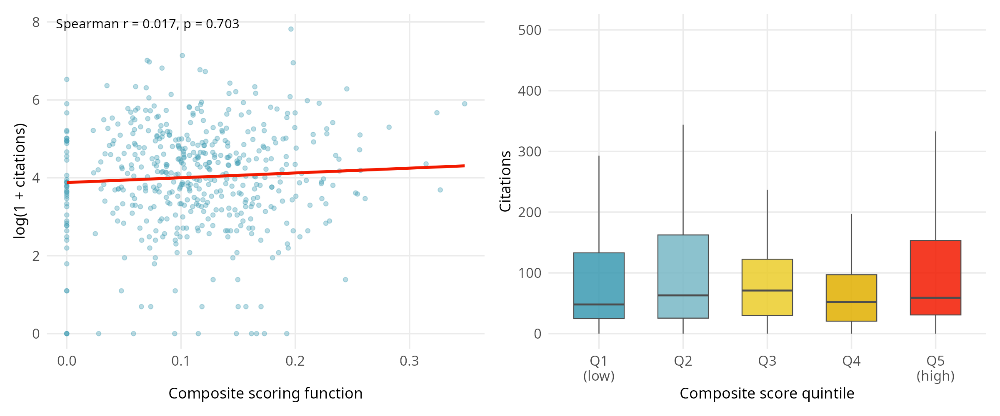
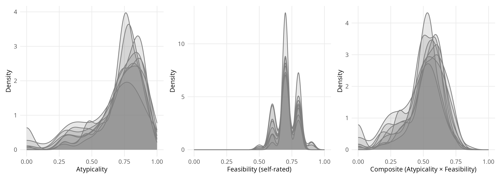
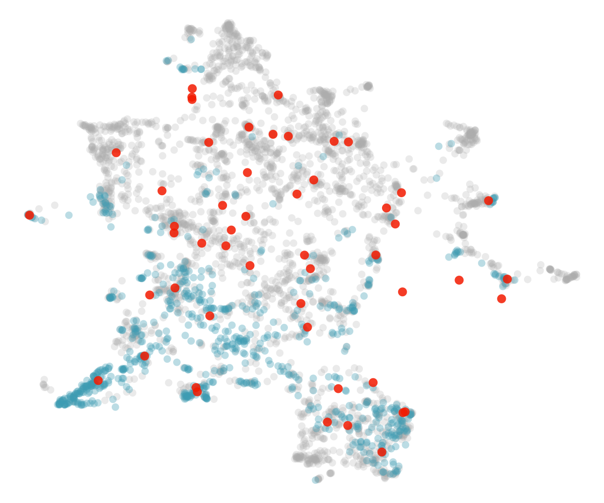

From Mapping a Field to Measuring the Research Space
AI, Idea Generation, and Cross-Field Transfer
in Real Estate Finance and Economics
University of Cambridge
2026
What makes a research idea good?
Novelty is necessary but not sufficient. An idea that is technically feasible and lands in an underexplored part of the research space is more likely to matter.
Can we measure this — and can AI help generate ideas that score well?
The corpus
50+ years of Real Estate Economics (1,676 articles, 1973–2024) plus relevant subsets of JUE, JREFE, JF, RFS, and AER.
Each paper: LLM-extracted research question, method, and key finding → sentence embeddings → UMAP → research space.
The research space

REE vs. top journals


Distance from the frontier predicts citations


Validating the reward function

Three ways to prompt for ideas
- A — Naive: unconstrained generation
- B — Cluster-seeded: anchored to an underexplored cluster
- C — Method-transfer: top-journal method × RE cluster
Structured prompting improves idea quality

Where do the ideas land?

AI in real estate research

Conclusions
The research space is measurable. Distance from the frontier predicts citation impact.
AI-generated ideas can be steered toward underexplored, high-potential regions — but structured prompting is what does the work.
Cross-field method transfer (condition C) produces the highest novelty and atypicality scores.